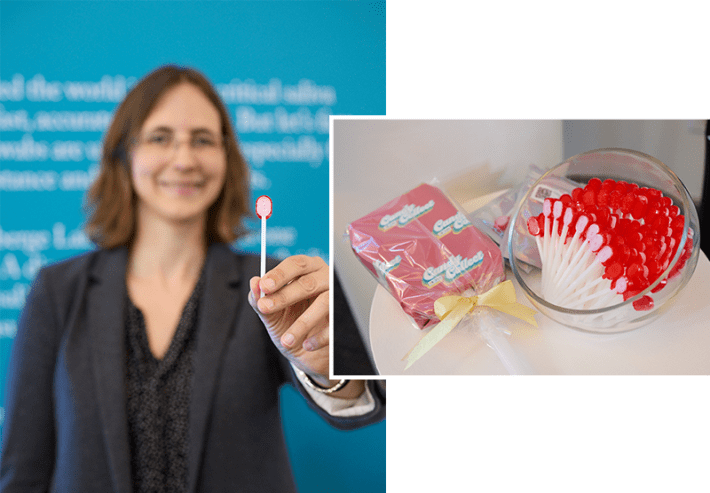
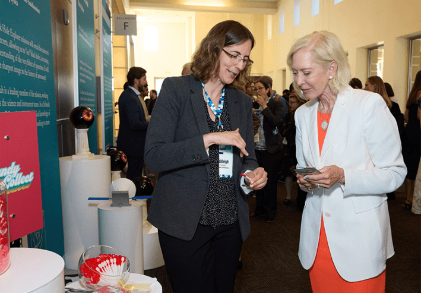

Ashleigh Theberge has alot of questions. “For as long as I can remember, I’ve had a strong interest in the natural world and why things are the way they are,” says the University of Washington chemist. Among the topics that caught her attention as a child growing up in Maine were mosses and lichens, celestial navigation, geology, and geochemistry. Theberge recalls being excited when she first learned about the scientific method as an elementary school student. “I was quite delighted that this framework existed, and I wanted to be part of folks that used that framework.”
Young Ashleigh didn’t simply tuck this knowledge away for use in her adult career. Instead, she got to work on experiments—first in her room, then in a dedicated space she and her father constructed above his wood shop. With guidance from high school teachers, Theberge asked whether the herbicide Roundup affected the ability of soil bacteria to convert nitrogen in the air into a form useful to plants, a process known as biological nitrogen fixation. The experiments took years, she says, with methods that progressed from counting bacterial nodules on plant roots to using instruments at the University of Maine to measure the activity of a nitrogen-fixing enzyme in free-living soil bacteria.
Theberge ultimately determined that Roundup decreased root nodule formation and reduced the activity of the enzyme, suggesting that Roundup may reduce biological nitrogen fixation by bacteria. The project made her a finalist in the prestigious Intel Science Talent Search.
Theberge’s unstoppable curiosity continues today as her laboratory at the University of Washington pursues projects ranging from designing at-home biological sample collection kits to exploring the physics of liquid flow to investigating molecules made by filamentous fungi. Her broad-ranging interests made her a fit for the Schmidt Polymaths Program, which supports mid-career scientists pursuing interdisciplinary research.
Schmidt polymaths, which Theberge was named a member of last year, suits a researcher who struggled to settle on a single topic to pursue, let alone a single discipline. Theberge says her selection by the Intel talent search led to a summer internship doing small molecule synthesis at pharmaceutical giant Merck, where she was “really thrown into the deep end.” She spent another summer at the company’s New Jersey headquarters the following year, and a third at a separate Merck site in Pennsylvania after graduating from Williams College in Massachusetts. Theberge still draws on those experiences in industry. “When I’m lecturing quantitative analysis with undergraduates, I talk about calibrating the balance at Merck and how what we’re doing is still very relevant to industry work,” she explains.
The team devised a device that allows patients to collect their own blood samples at home.
As an undergraduate, Theberge did projects in microbiology, organic synthesis, geochemistry, and paleoclimatology, and spent a summer on inorganic chemistry at Argonne National Laboratory near Chicago and another in a physical chemistry lab at Williams. She says she enjoyed all of those forays into the world of research. Even after settling on a lab for her graduate work—that of Wilhelm Huck, then at the University of Cambridge, where she planned to focus on polymer synthesis—she found herself captivated by a yet another new area after seeing a talk on microfluidics the summer before her senior year. Microfluidics refers to the manipulation of small amounts of fluids through channels less than a millimeter wide. It’s applied both in the lab, in tools such as “organ on a chip” devices that replicate aspects of human physiology for study, and in uses such as point-of-care diagnostics.
Fortunately, it happened that Huck’s lab had just begun its own microfluidics research, and he agreed to Theberge’s proposal to do her thesis research in that area. Microfluidics turned out to be a space that’s amenable to scientists pursuing diverse interests. “One of the great things about microfluidics that I really like is that it is very interdisciplinary,” she notes. “It’s a tool that you can bring to bear on many different questions across many different fields.”
Indeed, Theberge managed to structure her thesis as a compilation of assorted projects: devising a new catalyst for a type of organic reaction she’d carried out at Merck; a way of both purifying chemicals from a mixture and separating them into droplets of varying concentrations; and the multi-component construction of an organic molecule. This last project included the use of a biological catalyst, or enzyme, which Theberge describes as “kind of dipping my toe into biology” for the first time since her youthful Roundup study.

HIGH-TECH LOLLIPOP:Theberge and her collaborators developed CandyCollect, a microfluidic device that can capture bacteria in saliva in order to diagnose infectious diseases.Credit: Claudine Gossett.
Theberge leaned further into biology with her postdoctoral work in David Beebe’s lab at the University of Wisconsin-Madison. There, she was part of the biomedical engineering department rather than chemistry, which she found “a little bit disorienting” at first. In Beebe’s group, Theberge worked on microfluidic devices that incorporated cells—for example, to replicate disease conditions for study. In a separate project, she worked with Erwin Berthier, a biomedical engineer at the University of Washington, on a two-layer microfluidic device that could separate small molecules synthesized and released by cells to make them easier to analyze.
All told, “by the end of my biomedical engineering postdoc, I felt extremely at home in biomedical engineering,” Theberge says. Newly comfortable, she applied for faculty positions in biomedical engineering departments as well as in bioengineering, biophysics, and multiple types of chemistry. “I felt like I could be at home in any of those departments, but it would depend on the department’s ability to have an open mindset around interdisciplinary work,” she explains. She found that at the University of Washington’s chemistry department, and that openness was paired with high-caliber science, collegiality, and a willingness to meet her lab’s needs for multiple types of space and equipment for its wide-ranging work. Theberge also has an adjunct appointment in UW’s urology department, where she collaborates on studies of urinary tract infections and male infertility.
Theberge co-leads her group, dubbed the Bioanalytical Chemistry for Medicine and the Environment Lab, with Berthier. Asked for specifics on the group’s work, Theberge hesitates. “We probably have like, three dozen or so projects,” she says, offering to describe a few examples.
In one of theseprojects, the team devised an add-on to an existing device that allows patients to collect their own blood samples at home for analysis. The RNA in such a sample would normally degrade quickly, so the researchers developed a tube containing a chemical that stabilizes RNA, a compound found in all cells that helps translate DNA into proteins. RNA can reveal which genes cells are using at a given time, giving a window into the body’s inner workings. The lab got so many requests for the stabilizer tubes—from academia, pharma, and government researchers—that they decided to commercialize them, she says. She, Berthier, and another colleague, Sanitta Thongpang, have cofounded a startup company to that end.
Theberge’s lab is interested in using the blood collection and RNA stabilization devices to study the health effects of exposure to wildfire smoke by monitoring changes in participants’ gene activity over time. In a pilot study, Theberge and her colleagues found that RNA in blood collected and stored in the special tubes maintained its integrity unrefrigerated and exposed to heatwave temperatures. Her lab also had volunteers in western states use the devices to collect blood samples from volunteers when the region was blanketed in wildfire smoke in 2021. Preliminary data from samples analyzed so far indicate that gene activity associated with inflammation changed with wildfire exposure. The researchers are now conducting a similar analysis on more samples from additional subjects collected in 2021 and 2022.
“For the first time I’ve needed to buy space on a supercomputer.”
In another application of home blood collection and stabilization, Theberge is working with clinicians at New York University to test patients with either rheumatoid arthritis or psoriatic arthritis as their doctors work to determine which drug will benefit their particular case. “People could sample themselves at home after getting on a new drug, a biologic, for these diseases,” she explains.“And then be moved to a drug that works better for their disease sooner.” The typical process now is for a person to be put on a particular drug, and just give it a go for a few months. Then they would rate their pain on a scale, and maybe get some blood work—but that blood work currently “isn’t giving us really specific biomarkers for specific individuals.” According to Theberge, this trial-and-error process can be very slow and painful, sometimes leading to irreversible joint damage if patients aren’t administered the right drug quickly enough.
Theberge’s research on rheumatoid arthritis goes beyond speeding up the matching of patients with effective drugs. “We’re very interested in understanding the molecular mechanisms of the disease and how a particular person’s molecular pathways prime them to either respond or not respond to a particular drug,” she says. Her lab is also interested in the mechanisms of “why one person has a particular disease manifestation and somebody else manifests very differently.” Investigating those questions requires designing and coordinating a clinical study and then crunching reams of data on the level of proteins as well as RNA; “For the first time I’ve needed to buy space on a supercomputer,” Theberge remarks. “It’s moved way outside of a traditional chemistry lab.”
In yet another layer to the lab’s work with the RNA stabilizer tube, Theberge collaborates with a theoretician, Jean Berthier (Erwin’s father), on better understanding the physics, math, and chemistry “that governs the flow of fluids in open microfluidic systems and also systems like that tube,” she says. “He and another student in my group have iterated back and forth on pages and pages of equations” to describe why the tube containing the RNA-stabilizer chemical doesn’t spill if knocked over.
All told, “we’re needing to kind of push the boundaries of what’s known in multiple domains, not just like RNA sequencing and analysis and clinical study design, but also even the fundamentals of the fluid,” Theberge adds.
Her proclivity for bustingthrough disciplinary boundaries makes the Polymaths program a natural fit for Theberge. The award is extremely competitive—candidates must first be nominated by a partner university or someone in Schmidt Sciences’ network, then be invited to apply, then submit a winning application. Of 130 applications reviewed for 2025, just eight were selected, says Molly Coyne, a senior associate at Schmidt Sciences who supports the Polymaths program. Applicants sketch out ideas for what they’d do with up to five years of $500,000 per year in research funding if awarded. But they aren’t bound to pursue—or continue to pursue—those particular projects.
“The Polymaths program is intended to reach people at [the mid-career] stage so that they have that security, but it’s also intended to provide funding for work that might otherwise be a little bit challenging to find funding for because they are moving in a totally new direction,” explains Coyne. “That’s just not something that typical research structures reward often.”
A separate program, Schmidt Science Fellows, supports people earlier in their careers—at the postdoctoral stage—in pursuing interdisciplinary research.

TRANSMISSION TECHNICIAN: Theberge describing the science behind CandyCollect, a device that blends her passions for physics, chemistry, and biology. Credit: Claudine Gossett.
Theberge agrees that the Polymaths award affords scholars remarkable flexibility in the questions they choose to tackle. “It’s almost the fact that there is no requirement [to pursue a specific project] that makes it so amazing, because it allows people to take high risks, to move into new areas, to just completely pivot their research,” she says.
“One of the things that we hear often is that this award allows [recipients] the time, the funding, and the brain space to just get back to more curiosity-led work,” Coyne says. “And often that might be why they wanted to be a researcher in the first place.”
In total, Schmidt Sciences has awarded 35 Polymaths since the program launched in 2021. They meet in-person with each other and with Schmidt Sciences staff once or twice per year. It’s been helpful to bounce ideas off of “like-minded people, people that also are crossing disciplines or maybe making pivots and are not just going to be putting in proposals or submitting to journals that are well within their wheelhouse,” Theberge says.
With the new Polymath funding, Theberge says her lab is now working with a collaborator to develop a means of stabilizing urine samples for later analysis. In the same vein of at-home blood and urine sample collection, the group is also collaborating with different researchers to collect tiny, information-rich packets called extracellular vesicles from saliva using a lollipop-like microfluidic device. Theberge and her colleagues previously developed the device, dubbed CandyCollect, to nab bacteria from saliva in order to diagnose infectious diseases, such as those that cause sore throat.
By contrast, extracellular vesicles in the body originate from our own cells. The fat-encased bubbles bud off, carrying with them nucleic acids and proteins that reflect the cell’s inner workings. Capturing these vesicles with CandyCollect “positions us to have sort of a window into the cell in other parts of the body that then gets shed into saliva,” Theberge says. And the resulting data could ultimately be combined with that from blood tests to reveal a more complete snapshot of a person’s health.
Developing tools such as the RNA stabilizer and CandyCollect that others want to use is a rewarding aspect of her group’s work, Theberge says. “There is another category of projects that becomes intertwined with the tool development … which I’ll say is our fundamental research” into questions ranging from fluid flow to the mechanisms underlying disease, she observes. “Both are important. They often connect. And I’m really happy that in a given day, I could spend an hour on one and then two hours on the other and then jump back and forth.”
Even with her already impressive list of innovations, Theberge says it’s not a particular discovery, invention, or award that makes her most grateful. Rather, it’s her mentorship—including instances where trainees have made an argument contrary to her own thinking and proven their case. Theberge has thought hard about the way she and Erwin Berthier run the lab, which involves allowing members to make certain decisions autonomously in consultation with others who will be affected.
Mentorship also colors how Theberge sees the potential impact of the Polymaths program on the scientific enterprise. With an eye on more conventional funding mechanisms, well-meaning researchers might advise trainees or other junior colleagues with diverse interests to specialize in order to convincingly demonstrate deep expertise in a given area, she notes. But the Polymaths program is “a paradigm where you can be successful, and you can get funding based on having interdisciplinary interests—and not just interdisciplinary, but projects in vastly different areas,” Theberg says. “I think that’s really, really helpful and not only to me, but to the whole future of people coming up through the ranks in science.” 
Lead photo courtesy of Ashleigh Theberge
Källförteckning
- Originalartikel: https://nautil.us/high-tech-lollipops-that-detect-disease-1237868/